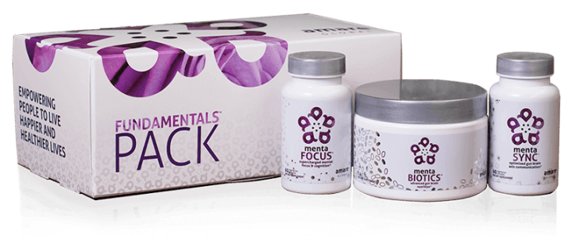

Hi, I'm Brett.
This is what I looked like, a few years ago. I look like a normal guy, right? That's because I am. I'm not a paid actor. I'm not a model. I'm a real guy, who had real mental and physical health problems. I happen to also be a web developer and I built this site. Let me tell you how I got better.
I've always struggled with stress and anxiety. I've never had a problem with depression until recently. I like to think the way I handle my stress has been a benefit to me. It's kept me thin! It's always been in my stomach. People usually get jealous of my ability to stay skinny. Ok, I'll admit, THAT part is weird. Once I hit my 30s, I started to struggle to manage it. I started to get an occasional migraine. My energy lessened over time.
Fast forward to November 2017. We had just finished building a house. We have 6 young girls, including 2 sets of twins. THAT alone is enough for anxiety. I still wouldn't trade them for the world. But almost over night, my gut called it quits. I had daily nausea. I lost 10 pounds in 2 weeks. My appetite disappeared. I went to the doctor and did all sorts of tests. Nothing! He wanted to put me on Prozac, but I wasn't ready to accept that. I tried different multivitamins. I tried changing my diet. I cut sugar and dairy. I took out gluten as much as I could(Let's be honest, that's super hard!). I discovered I have the bad version of the MTHFR mutation and learned everything I could about it. No, that's not a swear word. It's a mutation that just means I can't methylate properly, among other things.
I went to a functional neurologist to try and fix my brain. (That's where mental health issues are, right? Wrong! More on that in a minute.) He helped, but it wasn't enough. I kept losing weight and felt like garbage. My mind went into research mode and for MONTHS, I was looking for answers. All the while, my nausea and weight loss continued. I went to various other doctors and finally found a holistic doc who gave me a few answers. My small intestine was working at 15%. 15%???? Basically, it was a very weak place in my body. My Epstein-barr was active. I had a parasite. I had an h. pylori infection. My adrenal glands were essentially in complete failure. My serotonin and dopamine levels were crazy low. I was living on will power. The holistic doc started me on digestive enzymes and other drops I had to take 3x a day, under my tongue. They started to help a little. I saw very slow progress.
At this point, I was down another 11 pounds and counting. I tried a ton of other natural supplements. Nothing was working. Why wasn't anything working? For the sake of my marriage, I finally decided to start Prozac. SSRI is a 4-letter word, in my book! It was a bumpy ride and took weeks to get back to a somewhat normal feeling. That was the worst period of time in my life. I remember crying in bed because I didn't know what was wrong with me and I felt SO defeated. Nobody understood! Then my cousin introduced me to Amare. I convinced my wife that I was going to spend money on ONE more thing.
 September 26 will be a day I always remember. I stopped taking 35 of my 36 daily pills and started the Fundamentals Pack and Mood+. I kept Prozac because I had to. I didn't have much faith in the products, but I was desperate to try anything and heard stories of how awesome it was. I was down ANOTHER 10 pounds and hit my lowest weight since before high school. I looked like a skeleton. All my clothes were baggy. I dropped 3 pant sizes. In total, I had lost 30 pounds.